smile
smile
one design,
five hands.
Every scene keeps the original layout, copy and behavior — only the execution changes. Pick a lane per scene, mix freely. 1911/2011: same gun, different grip, barrel and finish.
STARTING SOON
Pre-market loading desk — orbit face, load bar, skyline.
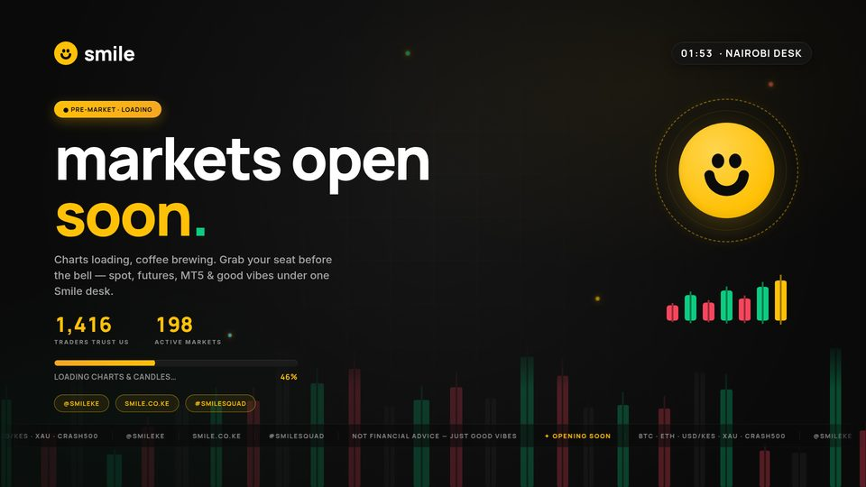
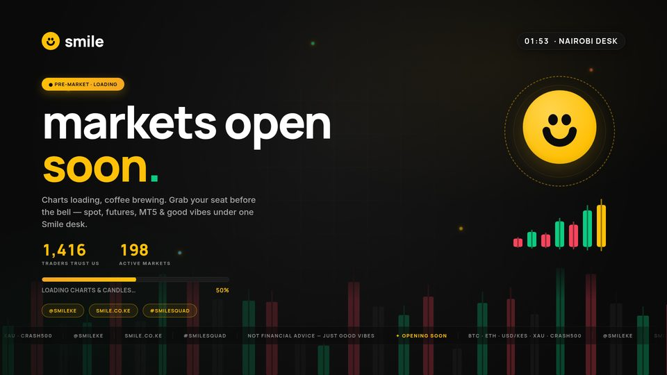
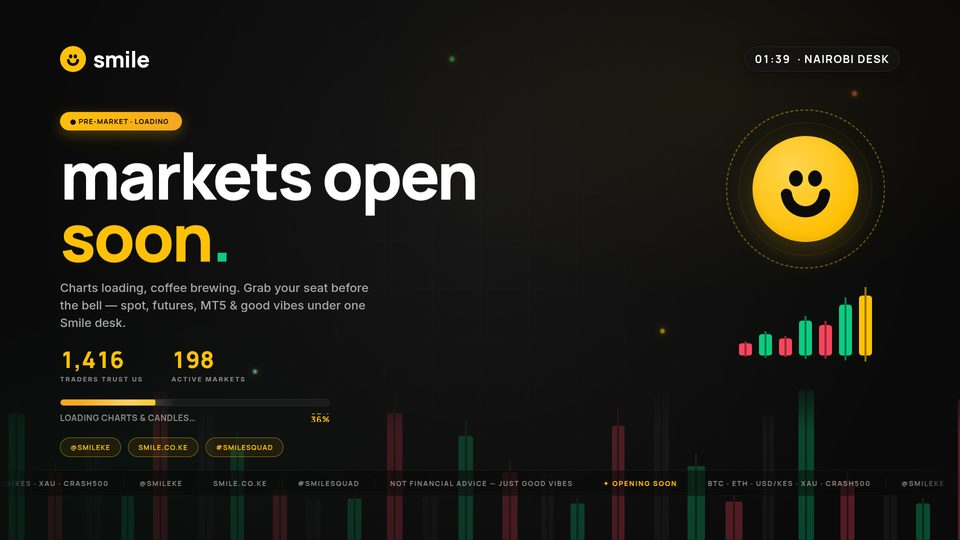
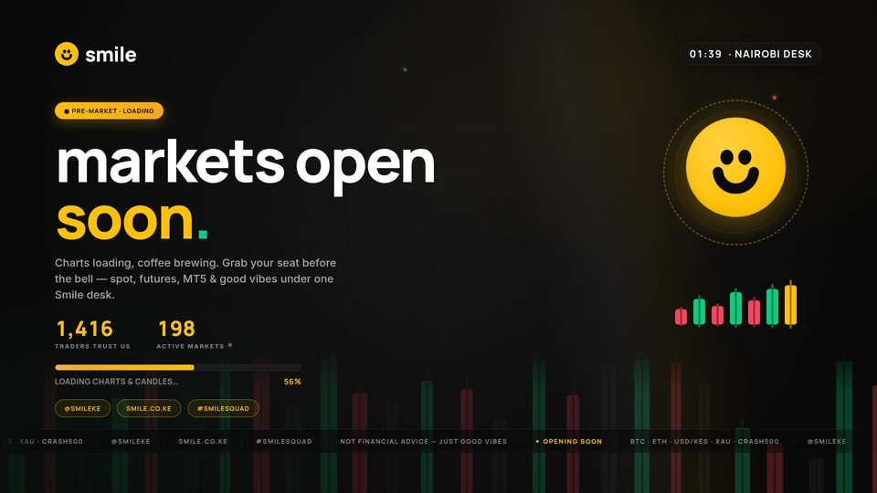
OPENING BELL
Ring + tickmarks + 292px number. ?from=N, beeps, flash & endlogo at zero.
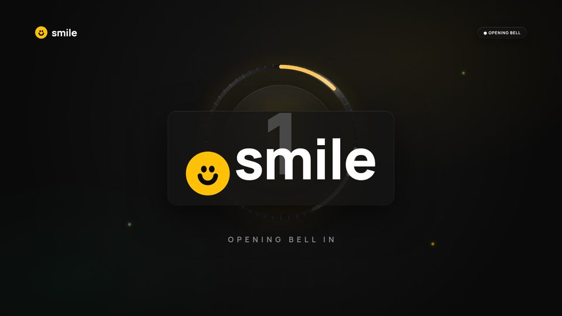
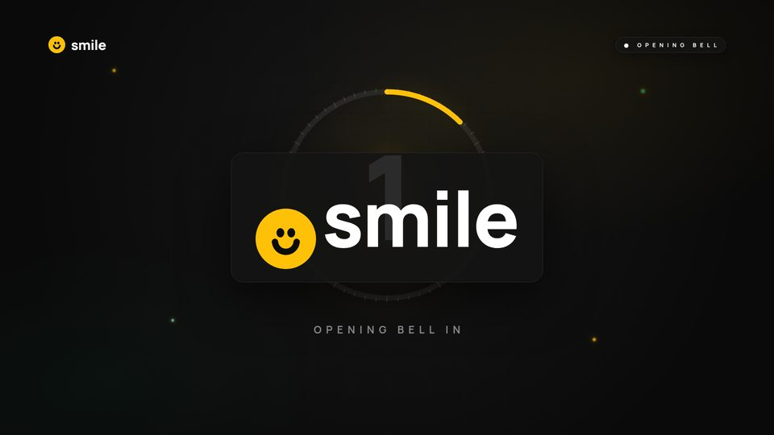
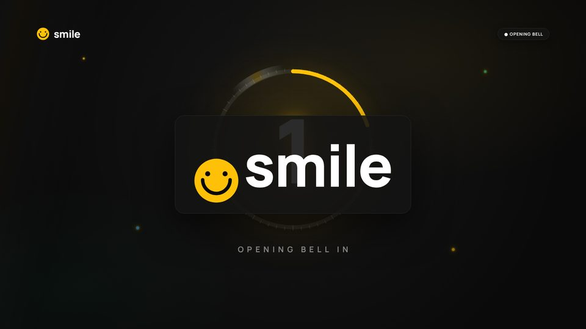
BE RIGHT BACK
Positions paused — buffer ring, breathing face, bounce dots.
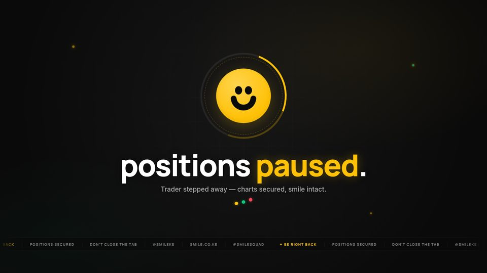
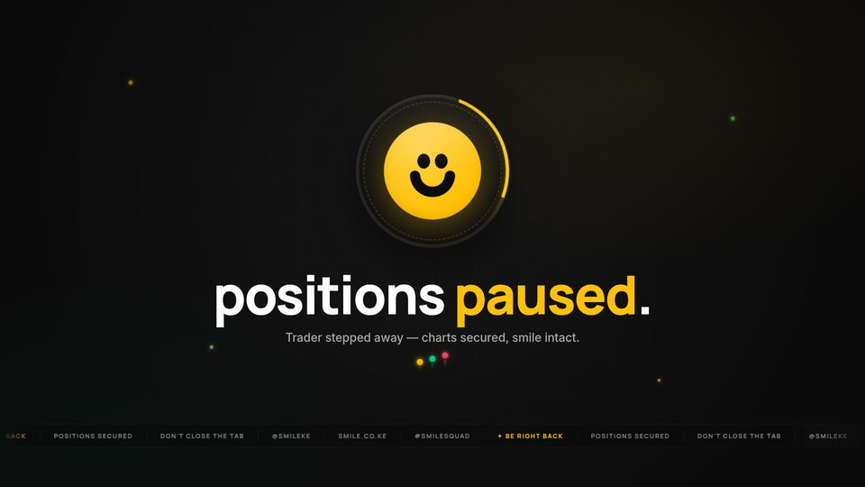
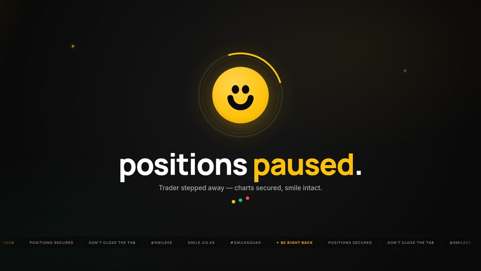
TECHNICAL DIFFICULTIES
We're on it — reconnect ring, status chips (derived from BRB DNA).


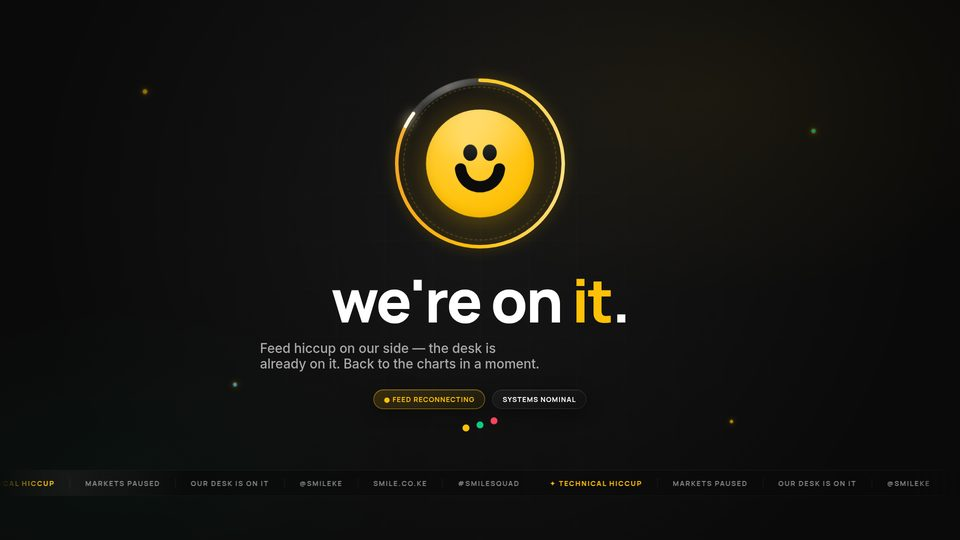
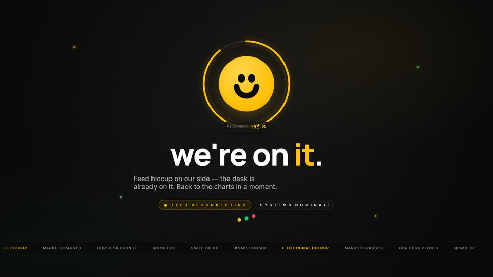
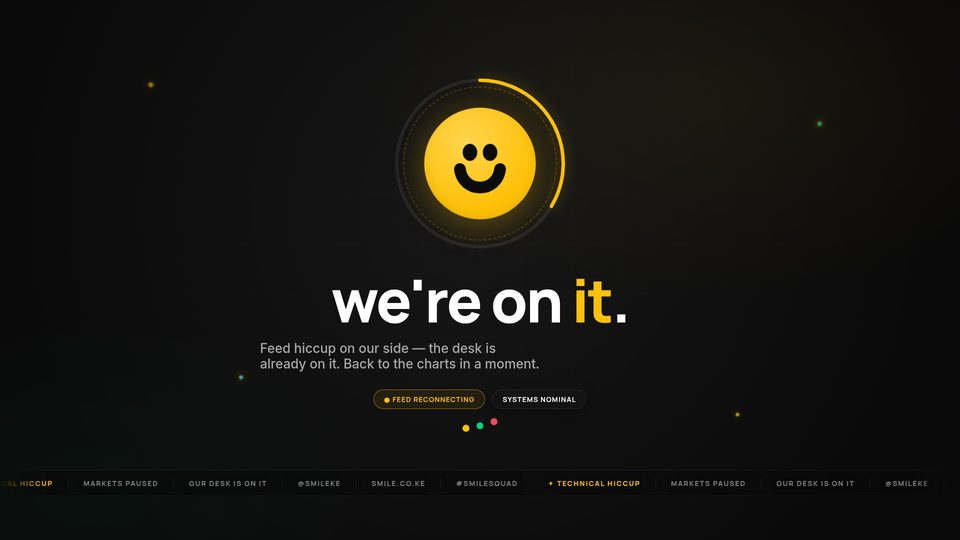
LIVE Q&A
Ask us anything — editorial column, orbit mic meter (derived from START DNA).

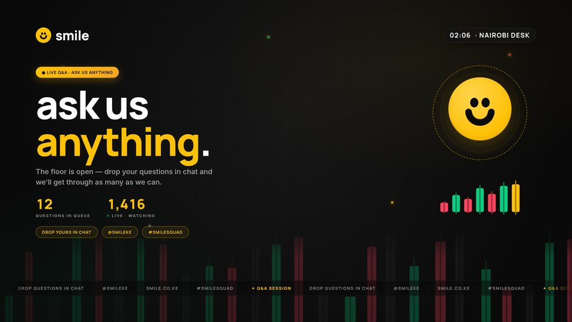
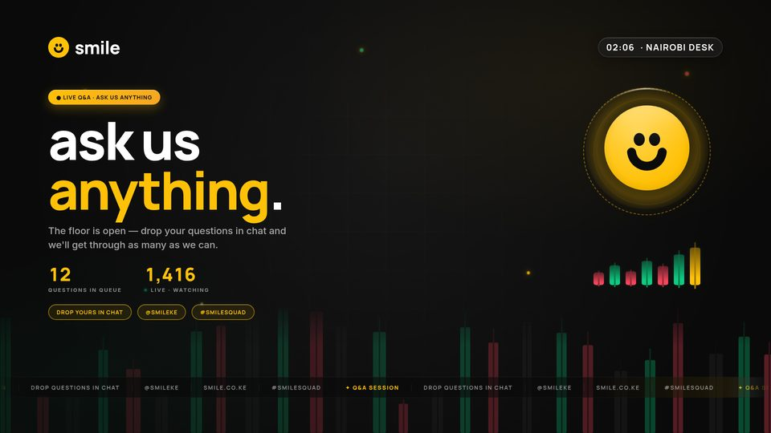


SESSION CLOSED
Asante for trading — confetti, disc spin, NEXT SESSION chip.
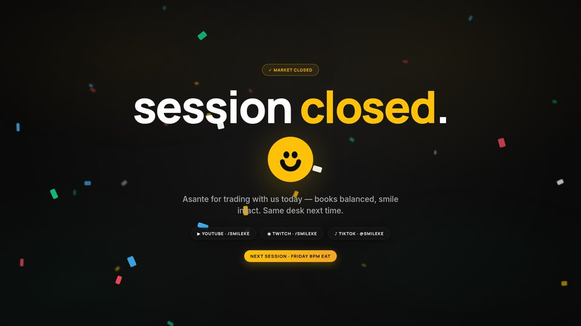
Lanes: E1 REFINERY retimed original · E2 MASS & SPRING physics entrances · E3 MATERIAL STUDY surface finishes · E4 TYPE IN MOTION kinetic type · E5 AMBIENT CINEMA living idle. Mesh any scene with any lane — the design never changes, the hand does.